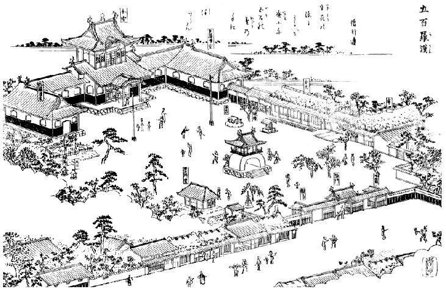

尾張名所図会/大龍寺

尾張名所図会に記されている大龍寺の図である。
この図会は弘化元（1844）年に刊行されたもの。従ってここには明治末に現在地に移転してくる前の姿が描かれている。
これによると現在とは本堂両脇の通路部分などが微妙に違っている。
移転前の建築の方がより本所羅漢堂に近いようだ。
寺伝に拠れば台風により本堂が大破したのが寛政3（1791）年。その後約半世紀後に尾張名所図会が発刊。さらにその二十数年後の慶応2（1866）年に藩主の命令により本堂が再建されている。
従って現在の姿（本堂と羅漢堂を繋ぐ通路部分が二層になっている）に変わったのはこの慶応年間の再建工事の時という可能性もある。
この大龍寺の通路のスタイルが変更された理由は一体何なのか？興味の尽きない寺である。